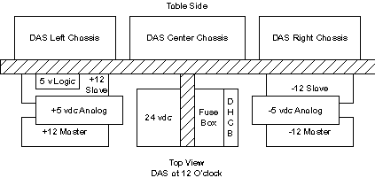
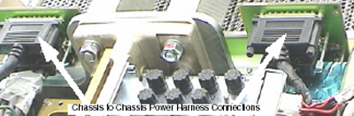
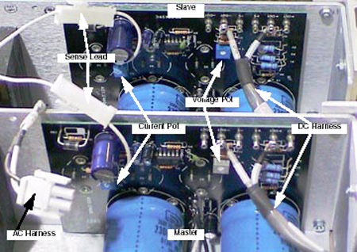
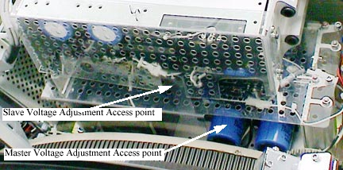

Operating Documentation
Direction 5114045-800, Rev# 10
LightSpeed 4.X Service Information (Advanced)
Operating Documentation |
| Required Persons | Preliminary Reqs | Procedure | Finalization |
|---|---|---|---|
| 1 |
| Last Revised: | February 23, 2004 |
| Item | Qty | Effectivity | Part# | Manufacturer | |
|---|---|---|---|---|---|
| Insulated "Tweeker" adjustment tool, 6 inch length | 1 | - | - | - | |
| Digital Volt Meter | 1 | - | - | - | |
| Flat blade screwdriver, 4 inch length | 1 | - | - | - | |
Test Points are available on the Center Backplane to measure Power Supply voltages.
Table 1: Backplane Voltage Test Points
| TEST POINT | DESCRIPTION | DC LEVEL SPECIFICATIONS | NOISE & RIPPLE PEAK TO PEAK SPECIFICATION |
|---|---|---|---|
| TP1 | +5 VDC Digital wrt LGND | +5 VDC ± 0.25 VDC | 5 mV in 20 Mhz Bandwidth |
| TP2 | LGND (Logic Ground) | ||
| TP3 | +12 VDC Analog wrt AGND | +12 VDC ± 0.6 VDC | 5 mV in 20 Mhz Bandwidth |
| TP4 | AGND (Analog Ground) | ||
| TP5 | +5 VDC Analog wrt AGND | +5 VDC ± 0.25 VDC | 5 mV in 20 Mhz Bandwidth |
| TP6 | -12 VDC Analog wrt AGND | -12 VDC ± 0.6 VDC | 5 mV in 20 Mhz Bandwidth |
| TP7 | AGND (Analog Ground) | On Center Chassis | |
| TP8 | -5 VDC Analog wrt AGND | -5 VDC ± 0.25 VDC | 5 mV in 20 Mhz Bandwidth |
Illustration 1: MDAS 16 Power Supply Identification

The MDAS 16 requires the use of parallel power supplies, specifically the 12 vdc supplies. There are two (2) +12 vdc in parallel and two (2) -12 vdc in parallel. These are configured in a master/slave operation. The slave is set for 11 vdc at the center DAS chassis. The master is set at 12 vdc at the DAS center backplane. The 12 vdc power supplies are linked together with a voltage sense line. The fully populated MDAS 16 requires 15 to 18 amps of current for normal operation. Each individual power supply is capable of providing 10 amps of current. To prevent current oscillation there is a 1 volt dc offset between the master and slave power supplies. The master power supply provides the final full load adjustment for DAS operation. Failure to adjust the 12 vdc power supplies correctly can result in a power supply crowbar state, intermittent image artifact or noise failures.
For general, minor adjustment of the +/- 12 vdc power supplies, only the Master is adjusted. For +/- 12 vdc power supply replacement the following procedure must be followed.
| Do Not adjust the Current Limit Potentiometer. The 12 vdc power supplies must be balanced correctly for proper operation. | |
Remove the Gantry Side, Top and Rear Covers.
Tilt the gantry back 30 degrees, to provide easy access to the power supply adjustment pots.
Turn off all 3 switches (Axial Drive, HVDC, 120VAC) on the STC backplane.
Rotate the gantry so the power supplies are accessible between 10 and 2 O’clock.
Disconnect the DAS Chassis to Chassis power cables at the Center DAS Chassis.
Illustration 2: Center Backplane Power Harnesses

Disconnect the Master 12 vdc AC, DC and Sense connectors. See Illustration 3.
Illustration 3: Master and Slave +/- 12 vdc Power Supplies (items removed for clarity)

Connect the DVM to the Center Chassis plus or minus 12 vdc test point and analog ground.
Turn on the STC backplane 120 vac switch.
Adjust the slave 12 vdc supply for 11 vdc on the DVM. See Illustration 4.
Illustration 4: Master Slave Voltage Adjustment Access

Turn off the STC backplane 120 vac power switch.
Reconnect the Master 12 vdc AC, DC and Sense connectors.
Turn ON the STC backplane 120 vac power switch.
Adjust the Master power supply for 12.2 vdc on the DVM.
Turn off the STC backplane 120 vac power switch.
Reconnect the DAS Chassis to Chassis power cables at the Center DAS Chassis.
Turn ON the STC backplane 120 vac power switch.
Make the final adjustment on the Master power supply for 12.0 +/- 0.6 vdc on the DVM.
Restore power and reassemble gantry.
Each of these power supplies is a single source and is to be adjusted under full load.
Do not adjust the current potentiometers. These are set by the manufacturer.
Use a DVM as identified in Table -2, “OBC Power Supply Test Points and Specifications,” in OBC Power Supplies Checks and Adjustments.
Illustration 5 shows the voltage adjustment pot locations.
Illustration 5: Adjustment Pot Locations for 5 vdc Logic, +/- 5 vdc, and 24 vdc Supplies

Perform System Scanning Test.